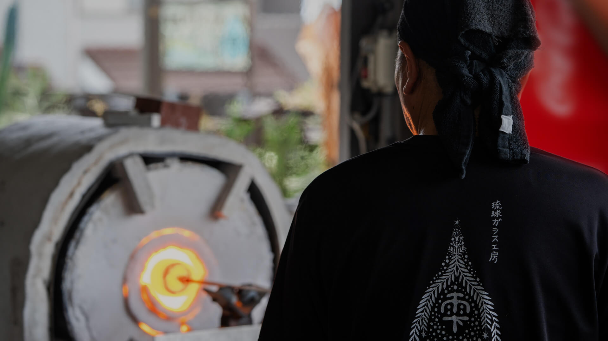
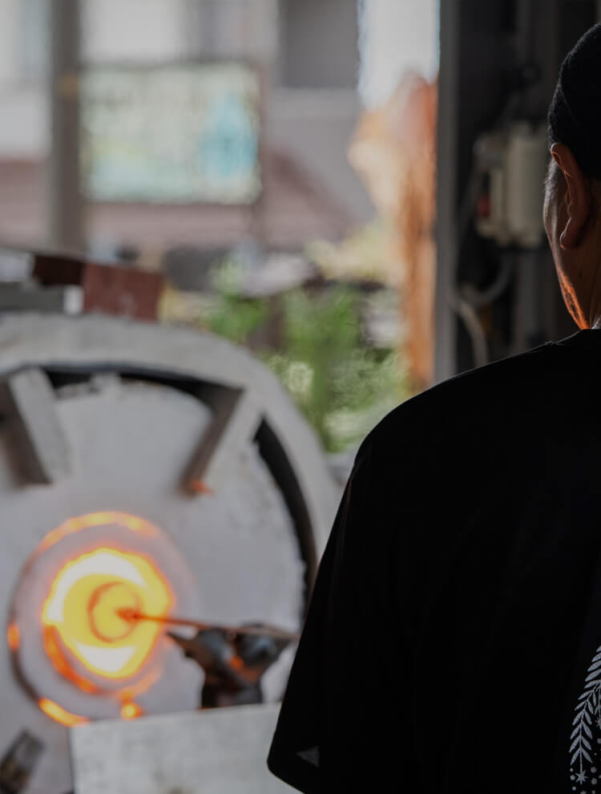
きわめ
HERITAGE AND
THE SPIRIT OF CRAFTSMANSHIP
CRAFTSMANSHIP琉球ガラス工房 雫
那覇の観光拠点としての可能性と
伝統文化の発信地としての期待
-
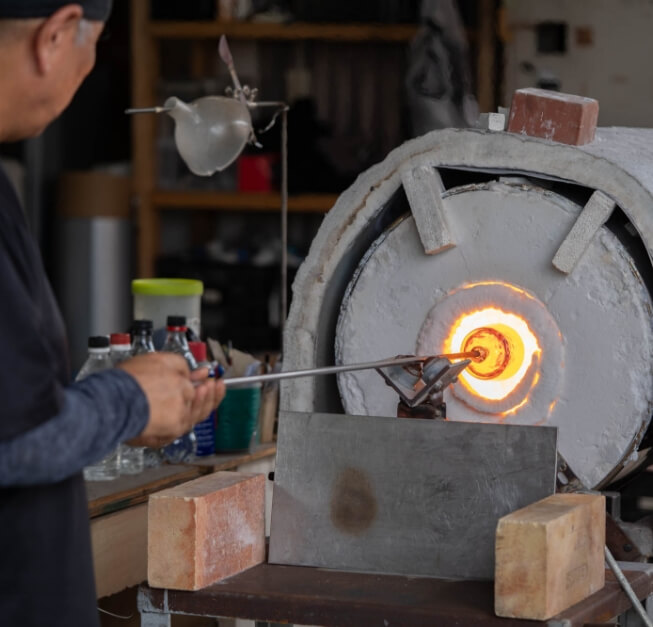
-
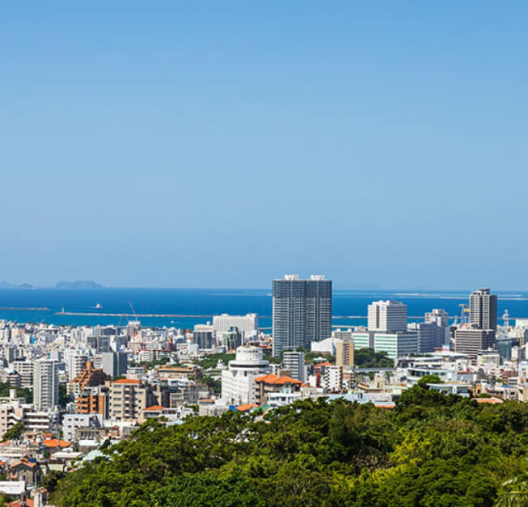
image photo
那覇は観光客が多く訪れる地域であり、その魅力は伝統工芸や伝統芸能といった沖縄文化を広く発信できる点にあります。このような文化を支える拠点として、那覇に新たな建物や施設を設けることは非常に意義深いと考えています。日本エスコンが手掛けるプロジェクトが、沖縄の豊かな文化と観光の調和を図り、さらなる魅力を創出する一助となることを強く期待しています。
NEWS & TOPICS
New Release in Okinawa Area
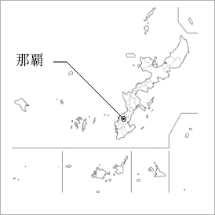
- ・（仮称）那覇市壷川プロジェクト
- ・（仮称）那覇市安里プロジェクト
当社は、2024年4月に沖縄支店を開設しております。沖縄県内においては2023年にゆいレール「壷川」駅から徒歩4分の場所に事業用地を取得。さらに2024年7月に那覇市安里において新規事業用地の取得を行いましたのでお知らせいたします。
今後も那覇の特性を活かし、沖縄エリアでの事業展開を進めてまいります。
会員様には、最新情報や
特別な商談機会をいち早くお届けします。
琉球ガラス工房「雫」の
10年の歩みと家族が紡ぐものづくり

琉球ガラス工房「雫」は、2014年に設立され、今年で10周年を迎えます。工房の特徴は、一つ一つ手作りで作られるガラス作品であり、沖縄の風景や植物をイメージしたデザインが取り入れられています。ぽってりとした質感と多彩なカラーバリエーションが魅力であり、琉球ガラスの伝統を守りながらも、現代の感性に合った製品を提供しています。
工房の名前「雫」は、設立時に娘が名付け親となりました。ガラス制作における先輩や後輩、同僚たちの力が一つに集まり、形になる様子を「水が集まって垂れる雫」に例え、その名が選ばれました。家族の絆が込められたこの名前には、琉球ガラスへの深い愛情と感謝の気持ちが込められています。
工房の設立者である兼次直樹氏は、いくつかのガラス工房で修行を積んだ後、独立して「雫」を立ち上げました。彼の作品は、沖縄の豊かな自然と伝統を反映しながらも、幅広い年齢層に愛されるデザインで、多くの人々に喜ばれています。
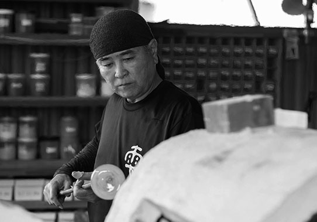
琉球ガラス工房 雫 工芸士
兼次 直樹（かねし なおき）
1969年 恩納村生まれ。1985年から2006年までの共栄ガラス工房、燦工房、琉球ガラスの郷、清天工房、匠工房、てぃだ工房などでの経験を経て、2004年、2005年に沖展入選。2006年には「波文様冷茶セット」にて奨励賞受賞。同年7月にリウボウ美術サロンにて「てぃだの輝き」工房展開催。その後も多くの受賞を経て2009年沖縄県工芸士認定。2012年craft in 沖縄市のクラフトマンシップ賞受賞、2014年に琉球ガラス工房 雫を設立。2016年、第14回craft in 沖縄市「レース紋様 酒器セット」奨励賞受賞、2018年、第69回沖展でも「circle」にて奨励賞受賞、その後沖展準会員推挙、2024年 現在に至る
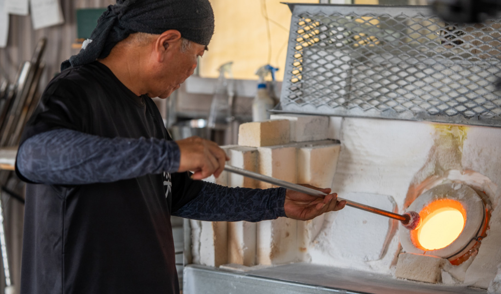
沖縄読谷村の自然が息づくガラス作品
琉球ガラス工房「雫」のこだわり
琉球ガラス工房「雫」の作品は、沖縄・読谷村の豊かな自然から多くのインスピレーションを得ています。美しい景観や空の色、夜空に輝く星々など、日常的に触れる自然の要素がガラスに反映され、独特の模様や色彩が生まれます。
特に「深海シリーズ」では、時間とともに変化する海の色合いをガラスで表現し、沖縄の自然を見事に映し出しています。また、植物や花、サトウキビなど沖縄特有の自然をモチーフにしたデザインも特徴的です。これらの作品は、沖縄の風景をそのまま切り取ったような美しさを持ち、一つ一つのガラスに魂が込められています。
-
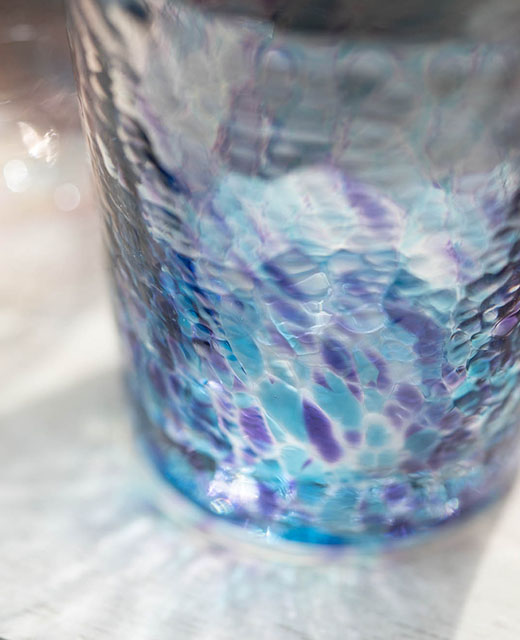
-
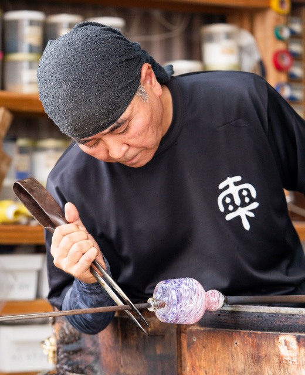
制作過程では、兼次氏が得たインスピレーションを元に、ガラスの色合いや模様を考案し、その都度新しい要素を取り入れています。妻の意見やデザインのアイデアも重要な要素であり、二人三脚で作品が生まれています。すべての作品は手作業で行われるため、同じデザインでも微妙に異なる表情を持ち、唯一無二の魅力を放っています。
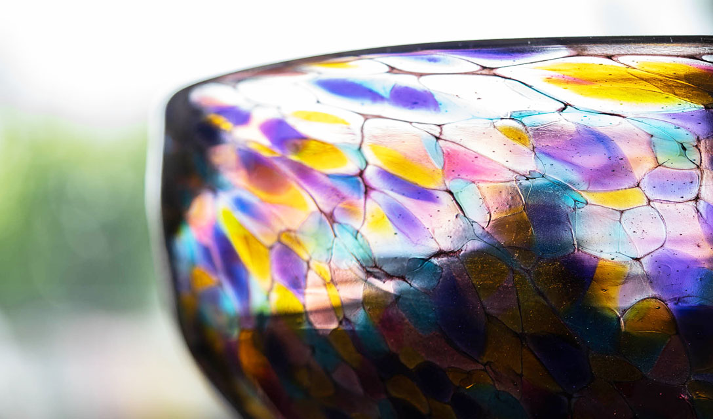
琉球ガラスの伝統と革新を担う
挑戦心とお客様の喜びが原動力
琉球ガラス工房「雫」の兼次直樹氏がものづくりを続ける原動力は、何よりもお客様の喜びです。彼が手掛けたガラス作品をお土産や日常使いとして購入したお客様が、それを家で使うたびに沖縄旅行の思い出話に花を咲かせ、心が温まる瞬間を過ごしていると聞くと、その喜びが大きな励みとなると語ります。
兼次氏は琉球ガラスの伝統に新たな技法を取り入れることにも情熱を注いでいます。20年前、富山での人材交流を通じてベネチアの技法を学び、その技術を琉球ガラスに取り入れました。特に、レース紋様のガラス作品は、彼が沖縄に戻ってから一から作り上げたもので、彼にとって大きなやりがいを感じる作品の一つです。
-
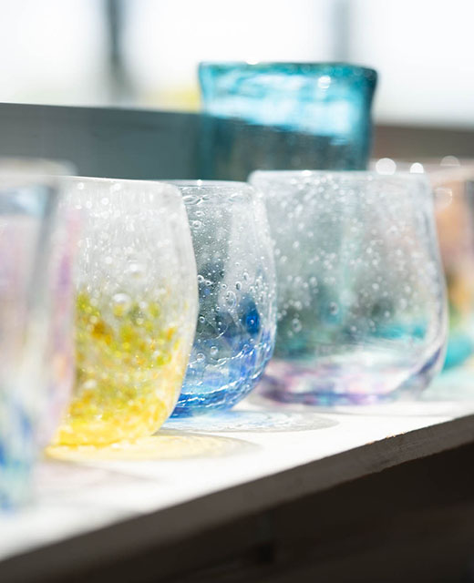
-
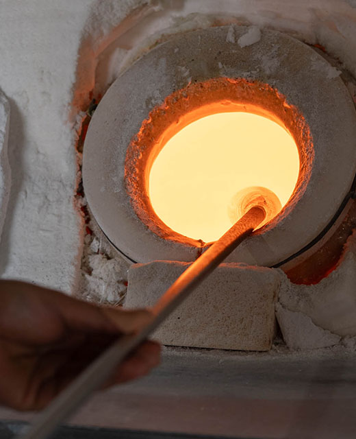
沖縄のガラスがこれまでお土産品として親しまれてきた中で、近年は若手職人が次々と独立し、新たなデザインや模様を取り入れるなど、琉球ガラスはさらに進化を遂げています。兼次氏は、こうした革新と伝統の融合が、今後の琉球ガラスの発展をますます楽しみなものにしていると語ります。
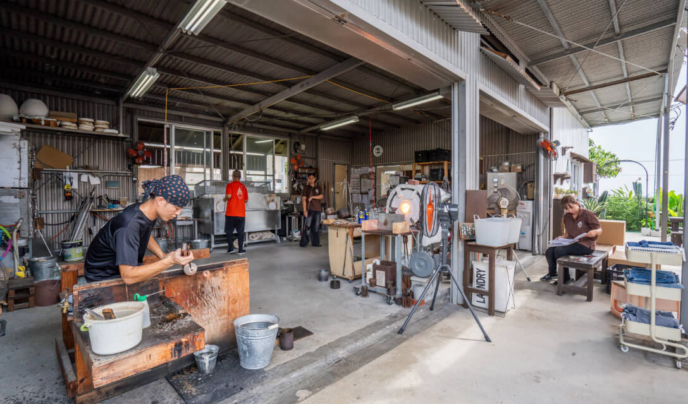
琉球ガラスの未来を担う
挑戦と後継者育成へ
琉球ガラス工房「雫」の兼次直樹氏は、琉球ガラスのさらなる発展と伝統工芸としての認定を強く望んでいます。現在、彼は沖縄県の工芸士として活動していますが、日本の伝統工芸品としての認定を受けるためには、100年以上の歴史が必要とされるという壁に直面しています。沖縄の工芸品に対する政府の認識がまだ十分ではないことが、この課題の背景にあります。兼次氏は現役の間に琉球ガラスを日本指定の伝統工芸品にすることを目指し、日々奮闘しています。
-
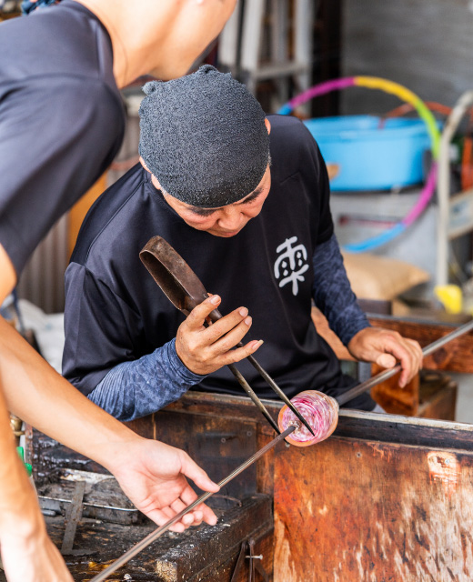
-
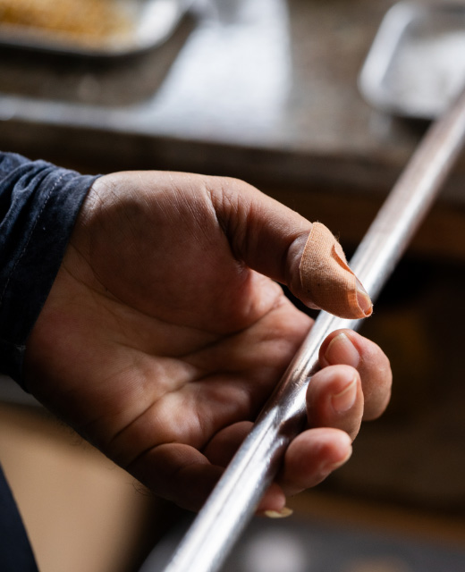
さらに、琉球ガラス産業が抱える最大の課題は人材不足です。特に沖縄の若い世代がガラス工芸に興味を持たない現状は深刻であり、兼次氏は後継者育成の重要性を痛感しています。彼は本土からの職人を受け入れ、技術を教えていますが、沖縄に根付いた若手が少ないことに懸念を抱いています。将来的には、沖縄の若い人々が琉球ガラスの魅力を発見し、伝統を受け継ぐ存在となることを願っています。
兼次氏の思いは、「日常の中に特別な瞬間を届ける」ことにあります。琉球ガラス工房「雫」の製品を通じて、日々の暮らしが少しでも明るく、心豊かになるようにと願いを込めています。これからも多様なデザインや新しい技術を取り入れ、琉球ガラスの魅力を広く伝えていくとともに、次世代の育成にも力を注いでいく決意です。
自然と文化が息づく読谷村での創作活動、
琉球ガラス工房「雫」の拠点
-
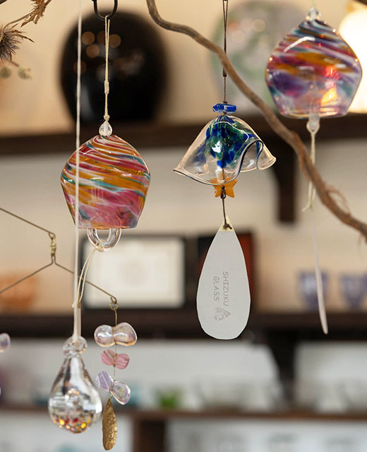
-
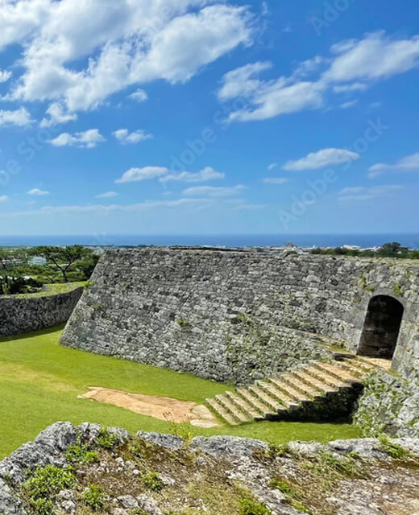
琉球ガラス工房「雫」の兼次直樹氏は、沖縄県の読谷村を創作活動の拠点としています。読谷村は、豊かな自然と美しい景観が広がる場所で、海にも近く、那覇や沖縄北部へのアクセスも良好です。こうした立地条件の良さと共に、自然から得られるインスピレーションが、彼のガラス作品に大きな影響を与えています。
また、読谷村は伝統文化やイベント芸能が豊富で、地元コミュニティとのつながりが強いことも特徴です。陶芸の「やちむんの里」や多くのガラス工房が集まるこの地域は、互いに刺激を与え合う場としても機能しており、先輩職人たちから学び、後輩たちと共に切磋琢磨することで、地域全体の技術と文化が発展しています。
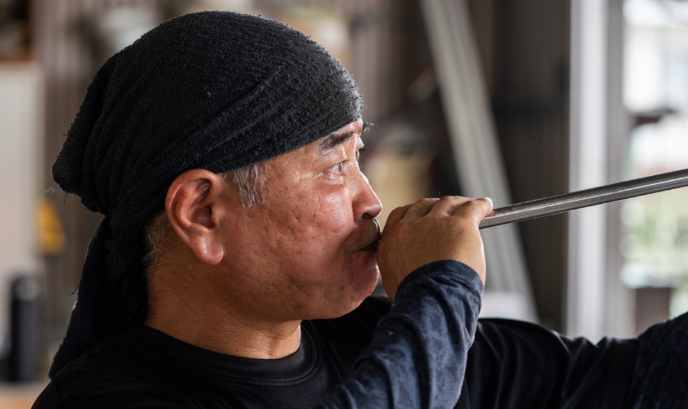
兼次氏は、読谷村での創作活動を続けられることに深い感謝の念を抱いています。住宅街に工房を構えていながら、地元の人々からの理解と支援を受け、創作活動を円滑に進められることを非常にありがたく思っています。読谷村は、琉球ガラスの魅力をさらに広める絶好の拠点であり、兼次氏はここでの活動を通じて、地域と共に琉球ガラスの伝統を未来へとつなげていくことを目指しています。
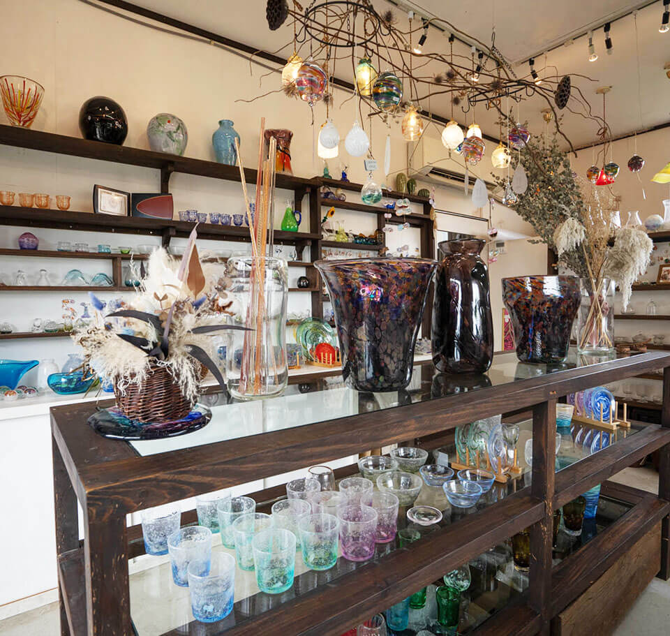
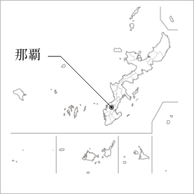
New Release in Okinawa Area
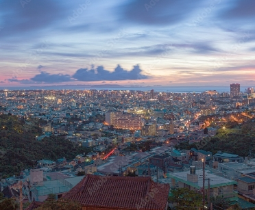
日本エスコン
那覇エリアにおける新規取得事業用地
（仮称）那覇市壷川プロジェクト
（仮称）那覇市安里プロジェクト
会員様には、最新情報や
特別な商談機会をいち早くお届けします。
※掲載のクラフトマンの写真・映像、記事は、2024年8月に取材撮影したものです。 ※掲載の地図は略図のため、省略されて表現されています。